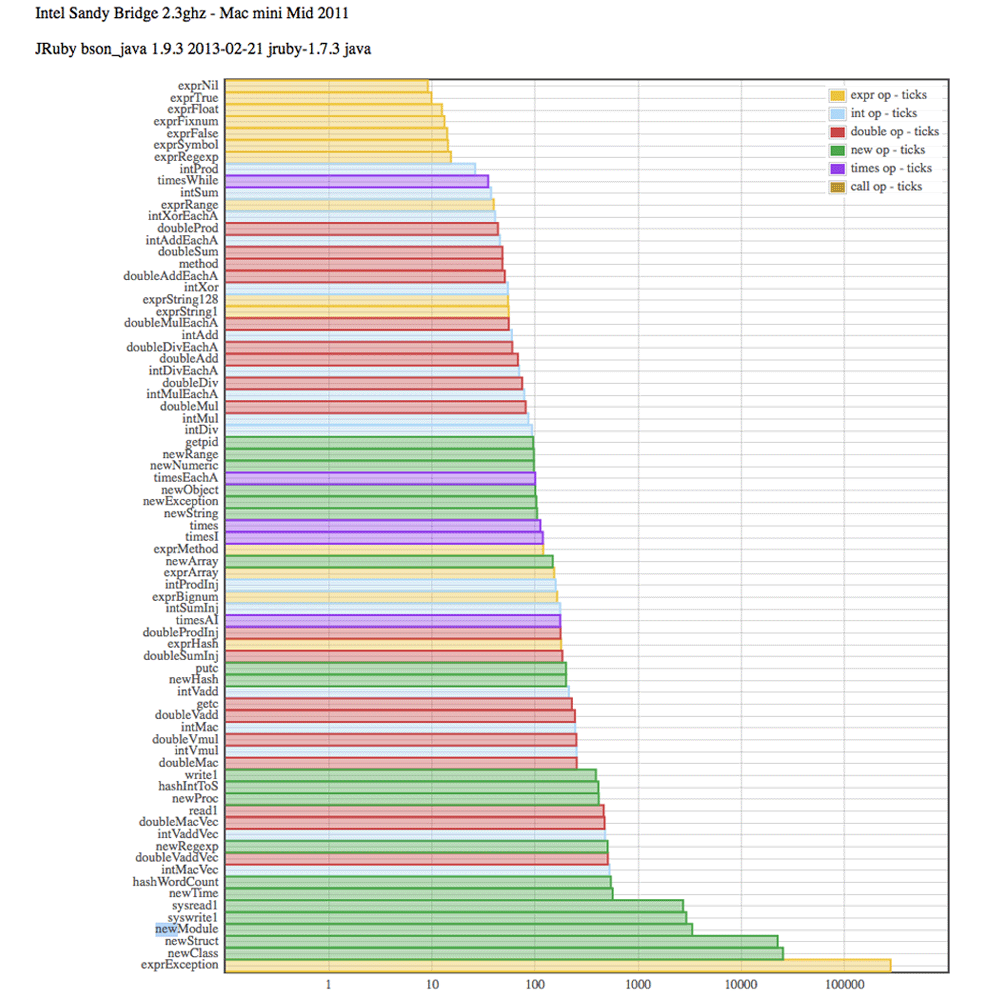

<!DOCTYPE HTML PUBLIC "-//W3C//DTD HTML 4.01 Transitional//EN">
<html>
<head>
    <meta content="text/html; charset=ISO-8859-1" http-equiv="Content-Type"/>
    <title>Ruby Call/Operation Cost in CPU Ticks</title>
</head>
<style type="text/css">
    table, th, td {
    // border : 1 px solid black;
    }

    td {
        width: 120px;
        margin: 0px 0px;
        text-align: center
    }

    pre.code {
        padding: 10px;
    }

    pre.cxx {
        background-color: papayawhip;
    }

    pre.ruby {
        background-color: mistyrose;
    }
</style>
<body>



<h1>Ruby Call/Operation Cost in CPU Ticks</h1>

<p>
Ruby is my language of choice for general purpose programming, for its expressive power and clarity.
The dynamic and generic object structure of Ruby makes it a good match for BSON and MongoDB,
likewise of Python, Perl, JavaScript, etc.
But the following questions are raised.
</p>

<ol>
    <li>What is the cost for Ruby with dynamic object data structures versus C++ with static structures?</li>
    <li>JRuby has improved performance. How do Ruby 2.0.0 YARV and JRuby 1.7.3 compare?</li>
    <li>How do we improve real-world performance?</li>
</ol>

<p>
    These rounded numbers express the relative cost of operations and calls in CPU ticks.
    Please see the graphs below for actual measured numbers.
    The following are from the Intel Sandy Bridge numbers (Mac mini mid 2011).
</p>

<table style="padding: 10px; width: 600px; background-color: lightyellow;">
    <tr>
        <th style="width: 150px;">Operation</th>
        <th style="width: 150px;">C++ <br>Measured-Rounded</th>
        <th style="width: 150px;">Ruby 2.0.0 Measured-Rounded</th>
        <th style="width: 150px;">JRuby 1.7.3 Measured-Rounded</th>
    </tr>
    <tr>
        <td>branch / loop</td>
        <td>0</td>
        <td>110</td>
        <td>100</td>
    </tr>
    <tr>
        <td>intXor</td>
        <td>1</td>
        <td>80</td>
        <td>50</td>
    </tr>
    <tr>
        <td>function call</td>
        <td>1</td>
        <td>70</td>
        <td>50</td>
    </tr>
    <tr>
        <td>stack object</td>
        <td>2</td>
        <td></td>
        <td></td>
    </tr>
    <tr>
    <tr>
        <td>fwrite</td>
        <td>50</td>
        <td>610</td>
        <td>390</td>
    </tr>
        <td>fread</td>
        <td>50</td>
        <td>4300</td>
        <td>460</td>
    </tr>
    <tr>
        <td>malloc + free</td>
        <td>270</td>
        <td></td>
        <td></td>
    </tr>
    <tr>
        <td>new heap object</td>
        <td>300</td>
        <td>450</td>
        <td>100</td>
    </tr>
    <tr>
        <td>write</td>
        <td>1500</td>
        <td>4600</td>
        <td>2,900</td>
    </tr>
    <tr>
        <td>read</td>
        <td>1500</td>
        <td>11,000</td>
        <td>2,700</td>
    </tr>
    <tr>
        <td>recv | send</td>
        <td>5000</td>
    </tr>
    <tr>
        <td>fork + wait</td>
        <td>200,000</td>
    </tr>
    <tr>
        <td>system</td>
        <td>450,000</td>
    </tr>
    <tr>
        <td>map/hash word count</td>
        <td>330</td>
        <td>880</td>
        <td>540</td>
    </tr>
    <tr>
        <td>map/hash int to string</td>
        <td>1,400</td>
        <td>1,100</td>
        <td>410</td>
    </tr>
</table>

<ol>
    <li>
        Ruby common primitive operations like looping, arithmetic,
        and method call appear to be in the ball-park of 100 instructions,
        and along with IO can often have an order of magnitude or more cost for Ruby over C++.
        For intensive  math, consider using C/C++ or Matlab.
    </li>
    <li>
        New object overhead is <em>expensive</em> for complex (non-simple) objects.
        See below for a table of expressions and objects and their associated allocation.
        Memory allocation is significant even with optimizations like many Ruby object slots per malloc.
        Optimize expression to minimize the allocation of complex objects.
    </li>
    <li>
        High-order structures like maps / hashes, lists, etc. involve malloc overhead,
        both in Ruby and C++.
        While Ruby is still significantly less efficient in general than C++,
        the difference for high-order operations is substantially less than
        the difference for common primitive operations.
        More complex "real-world" implementations may be even closer.
        The "map/hash word count" measurements show relatively smaller overhead factors for Ruby/JRuby.
        The "map/hash int to string" measurements actually favor Ruby and especially JRuby.
        See below for more detail.
    </li>
    <li>
        JRuby shows significant performance benefit over Ruby 2.0 even with the perfomance improvements from YARV
        as evident in these measurements.
        Especially note the reduced cost for a new heap object and see below for more detail.
        Java 7 brings with it an important new feature called invokedynamic,
        which greatly improves JRuby's performance on VMs that support it.
        However, the use of invokedynamic is off by default on Java 7.
        Measurements with invokedynamic are pending.
    </li>
    <li>
        For real-world performance, the answer is still the same.
        Write your code in the cleanest way possible, and then profile it to identify opportunities for optimization.
        Run A-B benchmarks of your optimized code to measure any gain and to determine acceptance, and iterate.
        Use the cost above to remind yourself to pay attention to IO, memory allocation, and loops.
        Lastly, consider a C or Java extension, but as minimal as possible for manageable maintenance.
    </li>
</ol>

<h2>Expressions, New Objects, and Allocation</h2>

<p>
Various expressions were measured for object allocation by disabling the garbage collector (GC), collecting GC stats,
running a repeated test expression, enabling and running GC, collecting GC stats again, calculating the difference
and the objects allocated per iteration of the expression.
</p>

<table style="padding: 10px; background-color: lavender">
    <tr>
        <th>Object Class</th>
        <th>Expression</th>
        <th>Objects Allocated</th>
    </tr>
    <tr>
        <td>FalseClass</td>
        <td>false || false</td>
        <td>0</td>
    </tr>
    <tr>
        <td>Fixnum</td>
        <td>1 + 2</td>
        <td>0</td>
    </tr>
    <tr>
        <td>Float</td>
        <td>1.0 + 2.0</td>
        <td>0</td>
    </tr>
    <tr>
        <td>NilClass</td>
        <td>nil</td>
        <td>0</td>
    </tr>
    <tr>
        <td>Symbol</td>
        <td>:my_symbol</td>
        <td>0</td>
    </tr>
    <tr>
        <td>TrueClass</td>
        <td>true && true</td>
        <td>0</td>
    </tr>
    <tr>
        <td>Array</td>
        <td>Array.new</td>
        <td>1</td>
    </tr>
    <tr>
        <td>Bignum</td>
        <td>1 << 64</td>
        <td>1</td>
    </tr>
    <tr>
        <td>Class</td>
        <td>Class.new</td>
        <td>2</td>
    </tr>
    <tr>
        <td>Exception</td>
        <td>Exception.new</td>
        <td>1</td>
    </tr>
    <tr>
        <td>Hash</td>
        <td>Hash.new</td>
        <td>1</td>
    </tr>
    <tr>
        <td>Method</td>
        <td>method(:exit)</td>
        <td>1</td>
    </tr>
    <tr>
        <td>Module</td>
        <td>Module.new</td>
        <td>1</td>
    </tr>
    <tr>
        <td>Numeric</td>
        <td>Numeric.new</td>
        <td>1</td>
    </tr>
    <tr>
        <td>Object</td>
        <td>Object.new</td>
        <td>1</td>
    </tr>
    <tr>
        <td>Proc</td>
        <td>Proc.new{}</td>
        <td>2</td>
    </tr>
    <tr>
        <td>Range</td>
        <td>Range.new(1,3)</td>
        <td>1</td>
    </tr>
    <tr>
        <td>Regexp</td>
        <td>Regexp.new(".")</td>
        <td>4</td>
    </tr>
    <tr>
        <td>String</td>
        <td>String.new</td>
        <td>1</td>
    </tr>
    <tr>
        <td>Struct</td>
        <td>Struct.new(:x)</td>
        <td>3</td>
    </tr>
    <tr>
        <td>Thread</td>
        <td>Thread.new{}</td>
        <td>7</td>
    </tr>
    <tr>
        <td>Time</td>
        <td>Time.new</td>
        <td>1</td>
    </tr>
</table>

<p>
In Ruby, all variables are references, e.g., pointers to an object.
Knowing that pointers are word aligned with low-bits set to zero,
Ruby stores some built-in types with small-data sizes as an immediate object
directly in the Ruby VALUE pointer, namely Fixnum, Symbol, true, false, and nil.
Therefore, the expressions above with zero objects allocated indicate the an immediate object.
A least-significant bit set to one denotes a 63-bit number on a 64-bit architecture.
Other low-order bit values specify the encoding of the other immediate objects.
On 64-bit architectures, some floats that do not require the full 64 bits can be stored as an immediate object.
Symbols expressions have no allocation because there is only one global instance (that is not subject to GC).
</p>
<p>
MRI and YARV Ruby reduce malloc overhead by allocating a large number of object slots in a single malloc.
Objects slots are 40 bytes on 64-bit architectures allowing small objects to be self-contained in a slot.
From the measurements, it is clear that JRuby optimizes allocation.
</p>
<p>
<a href="http://www.ruby-doc.org/docs/ProgrammingRuby/html/ext_ruby.html">VALUE as an Immediate Object - Extending Ruby - Programming Ruby
The Pragmatic Programmer's Guide</a>
</p>
<p>
<a href="https://blog.engineyard.com/2010/mri-memory-allocation-a-primer-for-developers">MRI Memory Allocation, A Primer For Developers</a>
</p>

<h2>Simple Algorithms</h2>

<h3>map/hash word count</h3>

<h4>C++</h4>

<pre class="cxx code">
map<string, int> m;
for (size_t i = 0; i < iterations; i++) {
    stringstream ss(STRING_1024);
    string word;
    while (ss >> word) {
        m[word] += 1;
    }
}
</pre>

<h4>Ruby</h4>

<pre class="ruby code">
h = Hash.new(0)
iterations.times do
    STRING_1024.split.each do |w|
        h[w] += 1
    end
end
</pre>

<h3>map/hash int to string</h3>

<h4>C++</h4>

<pre class="cxx code">
for (size_t i = 0; i < iterations; i++) {
    map<int, string> m;
    stringstream ss;
    for (int j = 0; j < VECTOR_SIZE; j++) {
        ss.seekg(0);
        ss << j;
        m[j] = ss.str();
    }
}
</pre>

<h4>Ruby</h4>

<pre class="ruby code">
iterations.times do
    h = Hash.new
    VECTOR_SIZE.times do |j|
        h[j] = j.to_s
    end
end
</pre>

<h2>Graphs</h2>
<ul>
    <li>
       Intel Sandy Bridge 2.3ghz - Mac mini Mid 2011 - Core i5 - <a href="call_report_ruby_macminimid2011.html">Ruby</a> and <a href="call_report_jruby_macminimid2011.html">JRuby</a>
        <p>&nbsp;&nbsp;&nbsp; JavaScript data - <a href="call_report_ruby_macminimid2011.js">Ruby</a> and <a href="call_report_ruby_macminimid2011.js">JRuby</a>
        </p>
    </li>
    <li>
        Intel Westmere 2.7ghz - MacPro Mid 2010 - 2 x 6-Core Xeon - <a href="call_report_ruby_macpromid2010.html">Ruby</a> and <a href="call_report_jruby_macpromid2010.html">JRuby</a>
        <p>&nbsp;&nbsp;&nbsp; JavaScript data - <a href="call_report_ruby_macpromid2010.js">Ruby</a> and <a href="call_report_jruby_macpromid2010.js">JRuby</a>
        </p>
    </li>
    <li>
        Intel Penryn 3.1ghz - MacBook Pro 17-inch Mid 2009 - Core 2 Duo - <a href="call_report_ruby_macbookpro17mid2009.html">Ruby</a> and <a href="call_report_jruby_macbookpro17mid2009.html">JRuby</a>
        <p>&nbsp;&nbsp;&nbsp; JavaScript data - <a href="call_report_ruby_macbookpro17mid2009.js">Ruby</a> and <a href="call_report_jruby_macbookpro17mid2009.js">JRuby</a>
        </p>
    </li>
    <li>
        Intel Merom 2.4ghz - Mac Pro Early 2008 - Core 2 Quad (Hackintosh) - <a href="call_report_ruby_hackintoshcore2quad.html">Ruby</a> and <a href="call_report_jruby_hackintoshcore2quad.html">JRuby</a>
        <p>&nbsp;&nbsp;&nbsp; JavaScript data - <a href="call_report_ruby_hackintoshcore2quad.js">Ruby</a> and <a href="call_report_jruby_hackintoshcore2quad.js">JRuby</a>
    </li>
</ul>

<p><a href="http://www.realworldtech.com/sandy-bridge/4/">Sandy Bridge - Instruction Decode and uop Cache</a>
    - for some clue about sub-CPU-tick measurements due to micro-ops.
</p>

<h2>mongo-performance</h2>
<p><a href="https://github.com/mongodb/mongo-performance/blob/dev/cxx/tests/test_call.cpp">C++ test_call.cpp</a>
</p>

<p><a href="https://github.com/mongodb/mongo-performance/blob/dev/ruby/tests/test_call.rb">Ruby test_call.rb</a>
</p>
</body>
</html>
